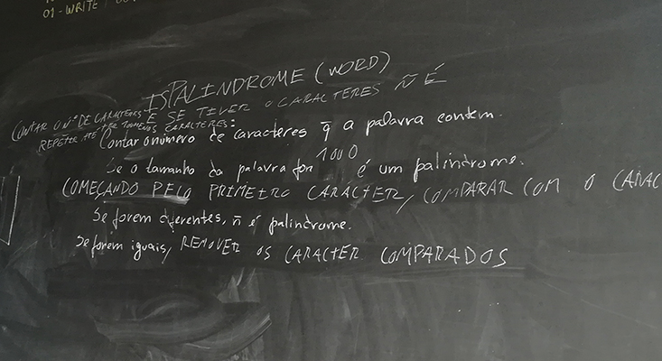
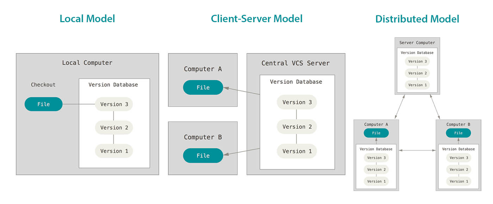
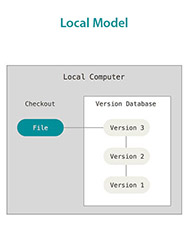
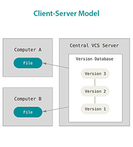
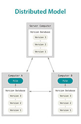

Summarizer #5
Nuno Amaral @ #19_Bootcamp
Follow me on your screen: n20amaral.github.io/summarizer5
Bootcamp Day 5 Overview
Iterative vs Recursive Pseudocode
Version Control Systems
Git Hands On
Iterative vs Recursive Pseudocode
isPalindrome() with Iterative Approach
isPalindrome() with Recursive Approach
Version Control Systems (VCS)
What is it?
It's a system that tracks file changes and manages collaborative work on a project.Why should we use it?
With a VCS it's possible to rollback to a previous version of a file and it's easier to solve conflicts when 2 or more people are working in the same document.No Version Control
What's wrong with not using version control?
- It's not collaborative work-friendly.
- Hard to track changes on files.
- Keeping every version of a file will consume much more storage space.
What kind of VCS system exists?
Local Data Model (aka File Locks)
- Require that everyone use the same filesystem
- Files will be locked when someone is using it, making the others wait to finish.
- Merging local copies of a file nees to be done manually.
Client-Server VCS (aka Centralized VCS)
- Require a connection to the central repository
- Needs to solve merge conflicts before commit a file.
- Offline and remote development it's hard to manage
Distributed VCS
- Does not require a central repository
- Commits to local repository and pushed/pulled to/from a remote repository
- Can be connected to multiple remote repositories.
- Offline and remote development friendly
Git Hands On

Created by Linus Torsvalds. Inspired on Bit Keeper. Described as "the stupid content tracker"
Git Commands
$ git version$ git config$ git initGit Commands
$ git add$ git status$ git commitWorflow
- Initialize a repository
$ git init - Edit your files
- Stage your changed files
$ git add - Review your changes
$ git status - Save changes
$ git commit
Other Git Commands
$ git log$ git rm$ git diffOther Git Commands
$ git checkout$ git clone$ git help
.gitignoreA file that contains the files of files to always ignore
Working with remotes
Working with remotes
Remote Git Commands
$ git remote$ git pull$ git pushThis subject will continue on another summarize...
Bootcamp day 5 highlight
$ git commit -m "summarizer final"
$ git push